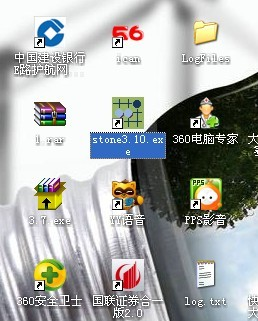
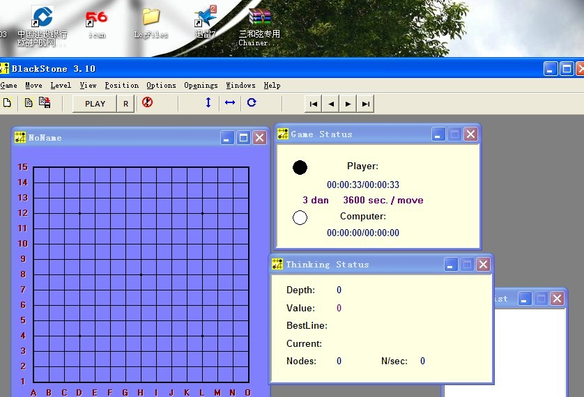

偶然查到黑石购买方式及黑石作者照片
#1 偶然查到黑石购买方式及黑石作者照片作者：海月 发表时间：2011-6-2 14:34:11
Blackstone - Renju playing program
Blackstone is not free (Price 40 USD)
You can download arhivated Blackstone .
Unarj it and ask me stigma.ltd@g23.relcom.ru about serial number for installation and inform me from which country you are and how you prefer to pay for it.
After receiving serial number you need send me three numbers including serial which you receive after installation.
Only after receiving your payment you can receive by e-mail pasword to activate Blackstone.
Every time when you upgrade your computer you need re-install Blackstone with your serial number and receive new pasword from me !

［此帖子已被 海月 在 2011-6-2 14:39:20 编辑过］
［此帖子已被 海月 在 2011-6-2 15:22:59 编辑过］
#2 Re:偶然查到黑石购买方式及黑石作者照片作者：潇洒 发表时间：2011-6-2 15:04:49
现在卖的是哪个版本的Blackstone？
#3 Re:偶然查到黑石购买方式及黑石作者照片作者：海月 发表时间：2011-6-2 15:23:40
邮箱地址应该不会变
据说有5.8的版本了
［此帖子已被 海月 在 2011-6-2 15:24:51 编辑过］
#4 Re:偶然查到黑石购买方式及黑石作者照片作者：欧艾沃 发表时间：2011-6-2 15:26:27
你们觉得黑石是免费吗？价钱是50美国元。#5 Re:偶然查到黑石购买方式及黑石作者照片作者：高飞 发表时间：2011-6-2 15:58:08
 在中国 软件没有破解不了的
在中国 软件没有破解不了的#6 Re:Re:偶然查到黑石购买方式及黑石作者照片作者：海月 发表时间：2011-6-2 16:01:30
引用：爱伏能帮我买一个吗
原文由 欧艾沃 发表于 2011-6-2 15:26:27 :
你们觉得黑石是免费吗？价钱是50美国元。
#7 Re:偶然查到黑石购买方式及黑石作者照片作者：梧桐风 发表时间：2011-6-2 16:17:02
 有没有终结者作者的照片
有没有终结者作者的照片#8 Re:偶然查到黑石购买方式及黑石作者照片作者：有志青年 发表时间：2011-6-2 16:32:20
中国人不差钱哟
#9 Re:偶然查到黑石购买方式及黑石作者照片作者：欧艾沃 发表时间：2011-6-2 17:48:54
如果有人想买最新的黑石，那么练习跟我 (QQ: 1264075560). 然后我可以告诉作者的电子邮件。我用黑石3.10，可能也有3.11，不知道。［ 极地剑客 于 2011-6-2 19:15:36 时花20金币送鲜花一朵］
#10 Re:偶然查到黑石购买方式及黑石作者照片作者：梧桐风 发表时间：2011-6-2 18:20:29
都有3.11了啊~#11 Re:偶然查到黑石购买方式及黑石作者照片作者：极地剑客 发表时间：2011-6-2 18:42:52
版本编号越来越回去了?.......................................#12 Re:偶然查到黑石购买方式及黑石作者照片作者：极地剑客 发表时间：2011-6-2 19:15:29
刚跟欧艾沃聊了一下.谢谢耐心解答.#13 Re:Re:偶然查到黑石购买方式及黑石作者照片作者：冰雪笑醉 发表时间：2011-6-2 19:21:33
 极地猪聊啥了
极地猪聊啥了#14 Re:偶然查到黑石购买方式及黑石作者照片作者：裁决殿雪月 发表时间：2011-6-2 19:35:44
不是4.0吗，怎么又回去了……
黑石的作者和小4都是神人啊~
#15 Re:偶然查到黑石购买方式及黑石作者照片作者：自来水 发表时间：2011-6-2 20:57:30
 看不懂
看不懂#16 Re:偶然查到黑石购买方式及黑石作者照片作者：灯塔连珠 发表时间：2011-6-2 21:45:36
不是现在3.7 3.82 3.9 三个版本漫天飞吗？怎么爱伏的版本却更低了，是不是搞错了！？#17 Re:偶然查到黑石购买方式及黑石作者照片作者：小丸.net 发表时间：2011-6-3 0:46:30
3.11是3.10后一个版本，3.10是3.9的后一个版本。。。。。。。3.9是3.7的后一个版本。。。外国人懂，咱不懂。。。（中国程序员和外国程序就是不一样3.9以后直接4.0）［ 极地剑客 于 2011-6-3 4:08:38 时花20金币送鲜花一朵］
［ 掌棋宣传员 于 2011-6-3 12:56:10 时花20金币送鲜花一朵］
#18 Re:偶然查到黑石购买方式及黑石作者照片作者：知游 发表时间：2011-6-3 15:13:46
11 > 10， 10 > 9，那当然 3.11 > 3.10 > 3.9 了。#19 Re:Re:偶然查到黑石购买方式及黑石作者照片作者：aabb 发表时间：2011-6-3 18:57:00
引用：
原文由 小丸.net 发表于 2011-6-3 0:46:30 :
3.11是3.10后一个版本，3.10是3.9的后一个版本。。。。。。。3.9是3.7的后一个版本。。。外国人懂，咱不懂。。。（中国程序员和外国程序就是不一样3.9以后直接4.0）［ 极地剑客 于 2011-6-3 4:08:38 时花20金币送鲜花一朵］
［ 掌棋宣传员 于 2011-6-3 12:56:10 时花20金币送鲜花一朵］
膜拜大神，终于看懂了。。#20 Re:偶然查到黑石购买方式及黑石作者照片作者：灯塔连珠 发表时间：2011-6-4 11:30:37
但是之前是现有3.7 ，之后是3.82，最后是3.9呀！这可是逐次变高的版本呀！怎么后边又变低了！！真搞不懂！！3.11那人家卖吗？爱伏帮助联系一下，中国好多人想买呢，谢谢！#21 Re:Re:偶然查到黑石购买方式及黑石作者照片作者：孤竹 发表时间：2011-6-4 12:08:40
引用：练习？联系？爱伏直接用拼音输入法了么
原文由 欧艾沃 发表于 2011-6-2 17:48:54 :
如果有人想买最新的黑石，那么练习跟我 (QQ: 1264075560). 然后我可以告诉作者的电子邮件。我用黑石3.10，可能也有3.11，不知道。［ 极地剑客 于 2011-6-2 19:15:36 时花20金币送鲜花一朵］

#22 Re:偶然查到黑石购买方式及黑石作者照片作者：gerbo 发表时间：2011-6-4 23:02:59
提问几点：
1.黑石软件是否绑定计算机（假如是的，那么更换这部分，是否需要重新联系软件开发员?)同一个人的两台或者两台以上电脑需要安装此软件，是否需要附加付费？
2.黑石软件是否是一次付费，永久享受软件开发员的升级服务？
3.官方的3.9版本以上（不包括3.9版本）的版本有说明书吗？或者有一些用户个人的体会，也请使用过的详细谈谈。（感谢）
［此帖子已被 gerbo 在 2011-6-4 23:27:27 编辑过］
#23 Re:偶然查到黑石购买方式及黑石作者照片作者：极地剑客 发表时间：2011-6-5 0:29:09
23楼应该直接联系作者的。#24 Re:偶然查到黑石购买方式及黑石作者照片作者：gerbo 发表时间：2011-6-5 19:00:00
这个月不买，下个月才能考虑，由于出差，基本已经透支到下个月了，恩，谢谢极地。
#25 Re:Re:偶然查到黑石购买方式及黑石作者照片作者：圡人 发表时间：2011-6-6 8:54:32
引用：
原文由 高飞 发表于 2011-6-2 15:58:08 :
所以黑石的作者坚决不会把软件卖给中国人
［ 被感动的人 于 2011-6-6 9:06:16 时花20金币送鲜花一朵］
#26 Re:Re:Re:偶然查到黑石购买方式及黑石作者照片作者：被感动的人 发表时间：2011-6-6 9:06:44
引用：鼓掌欢迎俺们家偶像~
原文由 圡人 发表于 2011-6-6 8:54:32 :引用：
原文由 高飞 发表于 2011-6-2 15:58:08 :所以黑石的作者坚决不会把软件卖给中国人
［ 被感动的人 于 2011-6-6 9:06:16 时花20金币送鲜花一朵］
#27 Re:Re:Re:偶然查到黑石购买方式及黑石作者照片作者：虎哥 发表时间：2011-6-7 18:05:47
引用：偶像威武！
原文由 圡人 发表于 2011-6-6 8:54:32 :引用：
原文由 高飞 发表于 2011-6-2 15:58:08 :所以黑石的作者坚决不会把软件卖给中国人
［ 被感动的人 于 2011-6-6 9:06:16 时花20金币送鲜花一朵］
#28 Re:Re:偶然查到黑石购买方式及黑石作者照片作者：裁决殿雪月 发表时间：2011-6-7 19:30:25
引用：不对吧，应该是3.11 > 3.10 > 3.09
原文由 知游 发表于 2011-6-3 15:13:46 :
11 > 10， 10 > 9，那当然 3.11 > 3.10 > 3.9 了。
#29 Re:偶然查到黑石购买方式及黑石作者照片作者：冥王哈迪斯 发表时间：2011-6-8 18:25:44
呵呵~盗版 只能睁一只眼闭一只眼，说白了这个问题就是人民的法律意识上不去。。国家打击力度不行。如果真的有3.10也请帮我订一份。。谢谢了。。
#30 Re:偶然查到黑石购买方式及黑石作者照片作者：欧艾沃 发表时间：2011-6-19 1:12:59
黑石的作者终于回答了。他说了他现在没有什么机会卖黑石因为没有银行号等等。。。只有一个办法，如果想买，跟Ants联系。我还不知道怎么了，如果你送给Ants钱，然后作者给你黑石和黑石的号。所以我在一次问了他。他也说最新的是3.10。他说3.10比3.7好可是没有什么特别的进步。我自己用3.10，认为是好用可是Solver比黑石厉害。［ gerbo 于 2011-6-23 18:32:10 时花20金币送鲜花一朵］
#31 Re:偶然查到黑石购买方式及黑石作者照片作者：欧艾沃 发表时间：2011-6-22 23:51:19
Viktor BarykinJun. 18, 2011 at 8:09 pm |

［ 极地剑客 于 2012-5-16 1:22:01 时花20金币送鲜花一朵］
#32 Re:偶然查到黑石购买方式及黑石作者照片作者：卧龙孔明 发表时间：2011-6-23 9:51:39
为什么一定要买黑石？黑石有哪些地方不可被替代？#33 Re:偶然查到黑石购买方式及黑石作者照片作者：gerbo 发表时间：2011-6-23 18:34:17
 现在大家对软件都追求的极致，所谓的大局观，所谓的计算力，所谓的性价比。可能是后两者吧。
现在大家对软件都追求的极致，所谓的大局观，所谓的计算力，所谓的性价比。可能是后两者吧。#34 Re:偶然查到黑石购买方式及黑石作者照片作者：死劲哭 发表时间：2011-6-24 9:57:48
有没有可以不被杀毒软件删除的版本呀#35 Re:偶然查到黑石购买方式及黑石作者照片作者：灯塔连珠 发表时间：2012-5-15 18:04:23
最新的版本是3.10，可以确认了，因为我亲眼见过这个软件安装在了外国起手的笔记本电脑里。现在就是怎么搞到手的问题了。#36 Re:偶然查到黑石购买方式及黑石作者照片作者：极地剑客 发表时间：2012-5-16 1:18:51
楼上威武，另外4.0确实不存在，是310#37 Re:偶然查到黑石购买方式及黑石作者照片作者：絕版賭徒 发表时间：2012-5-16 8:41:53


有个球用~~~！
#38 Re:偶然查到黑石购买方式及黑石作者照片作者：灯塔连珠 发表时间：2012-5-16 9:46:29
当然是继续在中国大陆普及黑石3.10了！！！这个很有必要！！#39 Re:偶然查到黑石购买方式及黑石作者照片作者：灯塔连珠 发表时间：2012-5-16 11:09:04
只有极少数南方的棋手手上有3.11，北方大部分棋手手上没有这个软件。#40 Re:偶然查到黑石购买方式及黑石作者照片作者：极地剑客 发表时间：2012-5-20 0:40:06
311?表示不信。。。。另外310确实如aivo问作者所说，没有什么大的改进，该bug的地方依然还是bug。不如3.7+人脑来的快。#41 Re:偶然查到黑石购买方式及黑石作者照片作者：极地剑客 发表时间：2012-5-20 3:37:25
也许唯一的好处是：1.支持山口多打。2。强制修改计算时间，让软件反复长考后确认落子。
如图所示：配置2.2hz双核+1G内存（相比现在I7到处有，4g标配内存，很落伍的电脑了。）
给黑石要求6打，时间为一步计算7200秒(2小时）。确认可下6打自己落子后用时为15分钟。
#42 Re:偶然查到黑石购买方式及黑石作者照片作者：极地剑客 发表时间：2012-5-20 3:48:22
感觉比较适合懒人，懒得想，输就输，赢就赢了。#43 Re:偶然查到黑石购买方式及黑石作者照片作者：黄药师 发表时间：2012-5-20 9:24:21
黑石行价多少啊？有谁知道的？#44 Re:偶然查到黑石购买方式及黑石作者照片作者：絕版賭徒 发表时间：2012-5-20 11:39:55
50美元~~~!#45 Re:偶然查到黑石购买方式及黑石作者照片作者：灯塔连珠 发表时间：2012-5-20 12:36:32
现在不是钱的事，人家作者都不买给中国人。但是有些关系强大到无限的棋手，还是把软件搞到手了， 我真是佩服羡慕。听说可以联系爱沙尼亚的棋手可以买到，比如爱伏。#46 Re:偶然查到黑石购买方式及黑石作者照片作者：踵酃 发表时间：2012-5-20 12:52:03
Also I have no technical ability (bank accounts, etc) for selling it right now. So, if someone (doesn't matter Chinese or not) still wants to purchase BS 3.10, he can meet Ants at some live tournament and ask him about BS...
楼上误解了吧， 作者没有说不卖给中国人啊。 只是因为没有收钱的帐号。 所以想买的话可以跟安次要， 估计他可以直接收现金。
［ 极地剑客 于 2012-5-20 15:33:11 时花20金币送鲜花一朵］
#47 Re:偶然查到黑石购买方式及黑石作者照片作者：絕版賭徒 发表时间：2012-5-20 12:56:27
楼上正解
［ 极地剑客 于 2012-5-20 18:27:51 时花20金币送鲜花一朵］
#48 Re:偶然查到黑石购买方式及黑石作者照片作者：游戏人间 发表时间：2012-5-20 13:08:24
其实。。。这个版本和3.7比强大到哪里去了？难倒能开局就算出必胜？事实上现在的软件高手拆棋或者下棋有几个是走的软件思考的点的。还不是利用软件验证自己的思路而已。没必要搞这个。。。
黑石不过就是个思维加速器而已。。。
#49 Re:偶然查到黑石购买方式及黑石作者照片作者：小丸.net 发表时间：2012-5-20 13:19:08
我见过大神们的电脑【小天大鱼之类】，里面就一个RENLIB3.4和一个黑石3.7,连终结者都是2006.。。。。。#50 Re:偶然查到黑石购买方式及黑石作者照片作者：游戏人间 发表时间：2012-5-20 13:19:28
就像棋情那样的。。给他个3.7都不带终极者的。一样轻松横扫EMAIL赛A组。。。#51 Re:小丸.net【==Re:偶然查到黑石购买方式及黑石作者照片==】作者：黄药师 发表时间：2012-5-20 13:22:02
引用：最爱2006终结者
原文由 小丸.net 发表于 2012-5-20 13:19:08 :
我见过大神们的电脑【小天大鱼之类】，里面就一个RENLIB3.4和一个黑石3.7,连终结者都是2006.。。。。。